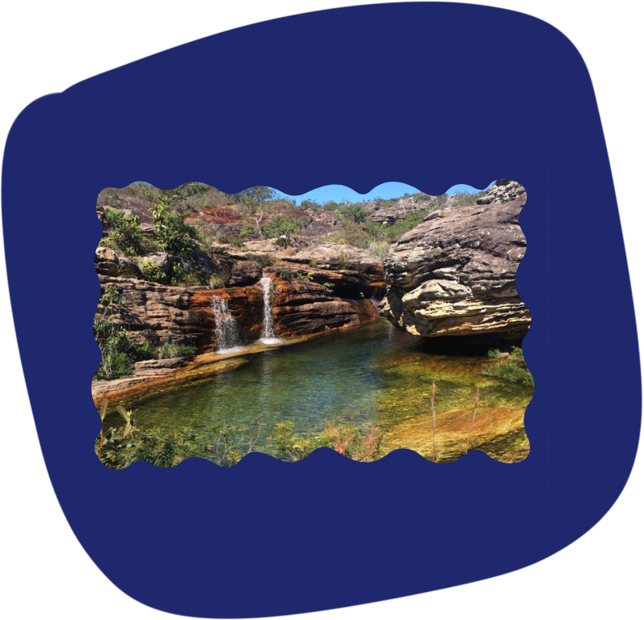
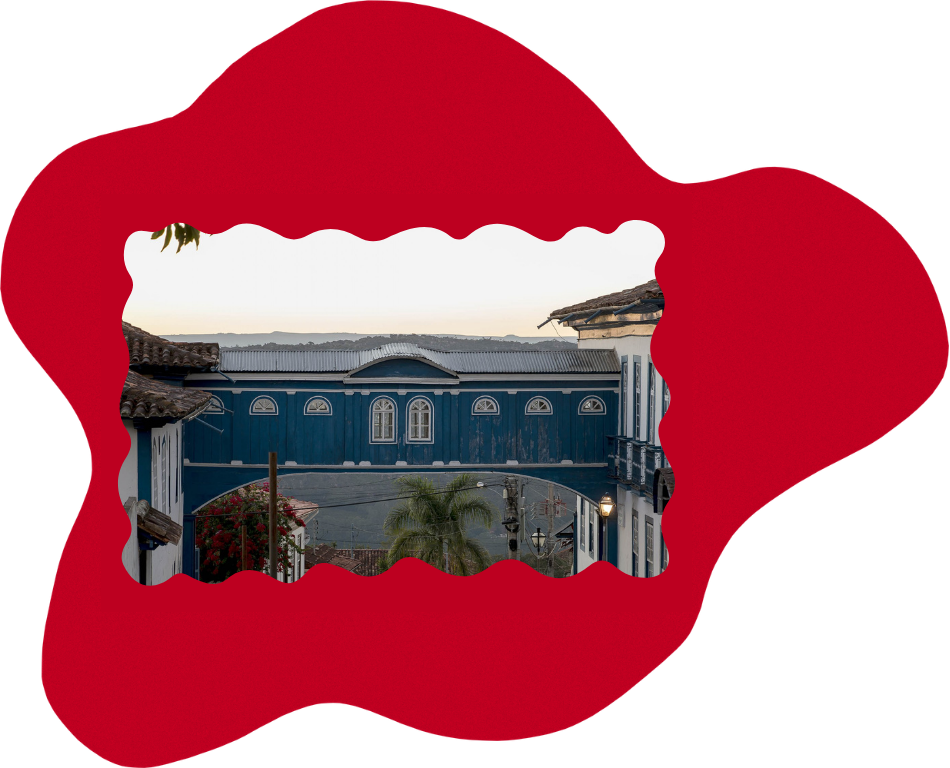

Sobre Nós
A Vali nasceu da união entre tecnologia e a vivência real em Diamantina. Somos uma empresa focada em transformar a forma como as pessoas interagem com a cidade. Mais do que apenas listar lugares, nosso objetivo é traduzir a história e a natureza da região para o ambiente digital, criando ferramentas que facilitem a descoberta de novas experiências para quem busca o autêntico e farmar aura.

Missão
Melhorar a exploração de Diamantina através de uma plataforma digital que conecte os universitários à cultura e ao lazer da cidade.
Visão
Ser o ponto de partida para quem quer viver Diamantina além do óbvio, unindo tecnologia e vivência local para mapear cada canto da região.

Valores
- Transparência
- Qualidade
- Autenticidade
- Valorização da cultura
Nossa Plataforma
Chega de ficar perdido em grupo do zap ou vasculhando o Maps. O Vali entrega um site intuitivo para você usar enquanto explora. Quer saber qual cachoeira é mais fácil de chegar? Onde vai rolar um som? Ou aquele barzinho escondido? A gente mapeou tudo!
Desenvolvemos uma interface limpa e rápida porque a gente sabe que você prefere gastar seu tempo vivendo a cidade do que pesquisando o que fazer.